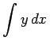
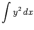
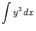
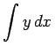
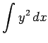
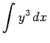
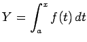

Inhalt Index DeskTop Bronstein

 Integralrechnung Bestimmte Integrale Grundbegriffe, Regeln und Sätze Berechnung bestimmter Integrale
Integralrechnung Bestimmte Integrale Grundbegriffe, Regeln und Sätze Berechnung bestimmter Integrale


Planimeter sind Geräte zur Ermittlung des Flächeninhaltes beliebiger geschlossener ebener Kurven, also auch des bestimmten Integrals einer Funktion  , die durch ihre Kurve gegeben ist. Spezielle Planimeter ermöglichen nicht nur die Berechnung des Integrals , sondern auch der Integrale  und .
, die durch ihre Kurve gegeben ist. Spezielle Planimeter ermöglichen nicht nur die Berechnung des Integrals , sondern auch der Integrale  und .
Integraphen sind Geräte, mit deren Hilfe das Kurvenbild einer Stammfunktion  gezeichnet werden kann, wenn das Kurvenbild einer vorgegebenen Funktion y = f(x) bekannt ist (s. Lit. 19.35).